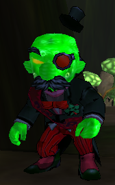
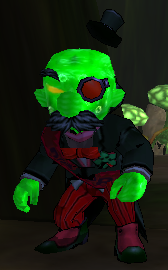
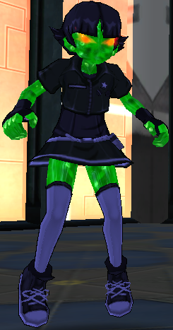
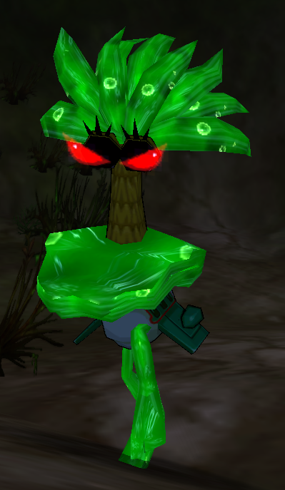

Fusion Fall Game Guide

KND Training Area - Sector V (The Future)
Fusions:
Fusion Numbuh Two
Nanos Gained:
Numbuh Two

Pokey Oaks Junior High - Pokey Oaks North (The Future)
Fusions:

Fusion Eddy
Nanos Gained:
Eddy

Peach Creek Estates - Peach Creek Commons (The Future)
Fusions:
Fusion Eduardo
Nanos Gained:
Eduardo
Recamended Nano(s): Eddy (Heal)

Pokey Oaks Junior High - Pokey Oaks North
Fusions:
 

Fusion Blossom Fusion Wilt Fusion Bubbles (Secret Lair) Fusion Mayor (Secret Lair)
Nanos Gained:
Blossom Wilt
Recomended Nano(s): Eddy (Heal), Wilt (Jump)

Mandark's House - Genius Grove
Fusions:
Fusion Dee Dee Fusion Dexter (Secret Lair)
Nanos Gained:
Dee Dee
Recamended Nano(s): Blossom (Antidote), Wilt (Jump)

Sweet Revenge - Candy Cove
Fusions:
Fusion Numbuh Five Fusion Numbuh Two (Secret Lair)
Nanos Gained:
Numbuh Five
Recomended Nano(s): Wilt (Jump)

Peach Creek Estates - Peach Creek Commons
Fusions:
Fusion Edd Fusion Blossom (Secret Lair) Fusion Frankie (Secret Lair)
Nanos Gained:
Edd
Recomended Nano(s): Blossom (Antidote), Wilt (Jump)

Megas'Last Stand - Goat's Junk Yard
Fusions:
Fusion Coop Fusion Wilt (Secret Lair)
Nanos Gained:
Megas
Recomended Nano(s): Eddy (Heal), Wilt (Jump), Dee Dee (Damage), Numbuh Five (Leech)

The Boneyard - Eternal Meadows
Fusions:
Fusion Billy Fusion Him (Secret Lair)
Nanos Gained:
Billy
Recomended Nanos: Wilt (Jump), Dee Dee (Damage), Numbuh Five (Leech), Megas (Sneak)
Reactor Works - Power Plant
Fusions:
Fusion Professor Utonium Fusion Professor Utonium (Secret Lair) Fusion Fuzzy Lupkins (Secret Lair)
Nanos Gained:

Professor Utonium
Recomended Nanos: Eddy (Heal), Edwardo (Drain), Wilt (Jump), Dee Dee-Billy (Damage) Numbuh Five (Leech), Megas (Sneak), Prof Utonium (Rocket)

Charles Darwin Middle School - Habitat Homes
Fusions:
Fusion Him Fusion Numbuh Three (Secret Lair) Fusion Father (Secret Lair)
Nanos Gained:
Him
recomended Nanos: Eddy-Him (Heal), Blosssom (Antidote), Wilt (Jump), Professor Utonium (Rocket)

Dizzy World - City Point
Fusions:
Fusion Bloo Fusion Billy (Secret Lair) Fusion Ace (Epic Lair)
Nanos Gained:
Bloo
Recomended Nanos: Eddy-Him (Heal), Blossom (Antidote) Wilt (Jump), Numbuh Five (Leech), Professor Utonium (Rocket)

Sunny Bridges Auditorium - Marquee row
Fusions:

Fusion Buttercup (Epic Lair)
Nanos Gained:
None
Recomended Nanos: Wilt (Jump), Professor Utonium (Rocket)

Jungle Traning Area - Mt. Blackhead
Fusions:
Fusion Bubbles
Nanos Gained:
Bubbles
Recomended Nanos: Blossom (Antidoote), Numbuh Five (Leech)

Loch Mess - Leaky Lake
Fusions:
Fusion Scotsman Fusion Scotsman (Secret Lair)
Nanos Gained:
Demongo
Recomended Nanos: Blossom (Antidote), Wilt-Bubbles (Jump), Professor Utonuim (Rocket)

The Fissure - Townsville Park
Fusions:
Fusion Max Fusion Vilgax (Secret Lair)
Nanos Gained:
Four Arms
Recomended Nanos: Wilt-Bubbles (Jump), Professor Utonium (Rocket)

Cuts And Brusies Skate Park - Orchid Bay
Fusions:
None
Nanos Gained:
None
Recomended Nanos: Wilt-Bubbles (Jump) Numbuh Five-Fourarms (Leech), Prof. Utonium (Rocket)

Sand Castle - Bravo Beach
Fusions:
<
Fusion Mojo Jojo Fusion Mandy (Secret Lair)
Nanos Gained:
Mojo Jojo
Recomended Nanos: Blossom (Antidote), Wilt-Bubbles (Jump), Professor Utonium (Rocket))

Crystalline Caverns - Pimpleback Mountains
Fusions:
Fusion Numbuh One Fusion Grim (Secret Lair)
Nanos Gained:

Numbuh One
Recomended Nanos: Wilt-Bubbles (Jump), Professor Utonuim (Rocket)

Construction Site - Morbucks Towers
Fusions:
Fusion Mandark
Nanos Gained:
Mandark
Recomended Nanos: Blossom (Antidote) Wilt-Bubbles (Jump), Prof. Utonium (Rocket)

Hani-Baba Temple - The Ruins
Fusions:
Fusion Grim Fusion Hex (Secret Lair)
Nanos Gained:
Grim
Recomended Nanos: Wilt-Bubbles (Jump), Professor Utonium (Rocket)

Tyrannical Gardens - Galaxy Gardens
Fusions:
Fusion Dexter Fusion Edd (Secret Lair)
Nanos Gained:
Dexter
Recomended Nanos:(Any)

Skypad Space Port - Offworld Plaza
Fusions:
Fusion Ben + Fusion Gwen
Fusion Ben (Secret Lair)
Nanos Gained:
Swampfire
Recomended Nanos: Wilt-Bubbles (Jump), Megas-Swampfire (Sneak), Edd (Recall), Professor Utonium-Dexter (Rocket)

Nowhere Triangle - Area 51.5
Fusions:
Fusion Vilgax Fusion Gwen (Secret Lair) Fusion Stickybeard (Secret Lair)
Nanos Gained:
Vilgax
Recomended Nanos: Wilt-Bubbles (Jump), Professor Utonium-Dexter (Rocket)

The Canopy - Really Twisted Forest
Fusions:

Fusion Mandy Fusion Coco Fusion Toiletnator (Secret Lair)
Fusion Numbuh Four (Secret Lair)
(Outside Of The Infected Zone)
Nanos Gained:
Mandy Coco
Recomended Nanos: Blossom-Mandark Professor Utonium-Dexter (Rocket)

Monkey Summit - Monkey Mountain
Fusions:
Fusion Numbuh Three Fusion Juniper Lee
Fusion Mojo Jojo + Fusion Coco (Secret Lair)
Nanos Gained:
Numbuh Three Juniper Lee
Recomended Nanos:Professor Utonium-Dexter

Dinossaur Graveyard - Dinossaur Pass
Fusions:
Fusion Hex Fusion Numbuh Four
Nanos Gained:
Hex Numbuh Four
Recomended Nanos:Wilt-Bubbles (Jump) Megas-Swampfire (Sneak)

Inferno Fields - Firepits
Fusions:
Fusion Ed Fusion Courage Fusion Courage (Secret Lair)
Nanos Gained:
Ed
Courage
Recomended Nanos:Eddy-Him-Numbuh One-Numbuh Three Courage (Heal) Megas-Swampfire (Sneak) Numbuh Five-Fourarms-Junipher Lee

Dark Tree Clearing - Dark Glade
Fusions:
Fusion Samurai Jack (Heart of The Dark Tree)
Fusion Demongo Fusion Mandark (Secret Lair)
Nanos Gained:
Samurai Jack Aku
Recomended Nanos:(Any)

Green Gullet - Green Maw
Fusions:
Fusion Tetrax
Fusion Coop (Secret Lair) Fusion Kevin 11 (Secret Lair)
:
Fusion Ed Edd N Eddy (Lair of The Fusion Eds)
Nanos Gained:
Humungousaur
Recomended Nanos:(Any)